Species African Violets (Streptocarpus)
Leaves of species currently available. African violets are now classed as Streptocarpus (formerly Saintpaulia). 40 varieties available. Last updated 27 November 2026.
This is a hobby, not a commercial greenhouse, so stock is limited and varies.
Leaves are sold in sets of two for R30 per set, and only one set per cultivar can be ordered. Minimum order: 5 sets (R150), so please choose at least 5 different cultivars, plus postage. Choose your sets below, then send the order to us. We reply with an invoice that lists what is available, the postage quote and our banking details. See Orders & Contact.
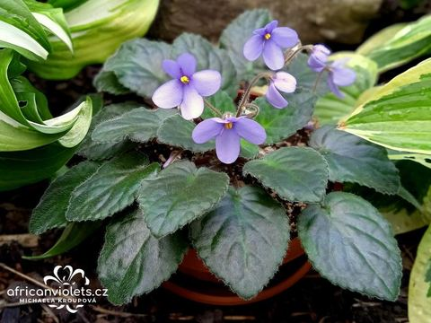
Str. ionanthus ssp. ionanthus var. ionanthus cl. ‘House of Amani’
Simple lavender blue pansy. 3-5 flowers grow on one bracket. The leaves are dark green, pointed, quilted, shiny, with slightly serrated edges. The back of the leaves is green, but it can turn red under strong light. The clone forms a ground symmetrical rose. Single medium lavender-blue blooms on short stems. Dark green, pointed, serrated, smooth, leaves. Usually grows single crowned.
Growing notes
The plant was brought from the Amani Botanical Garden in Tanzania. It is almost identical to the base clone ionanthus, so it is likely that this is only another form of the original. Capable of two bloomstalks per node when very healthy and pot bound.
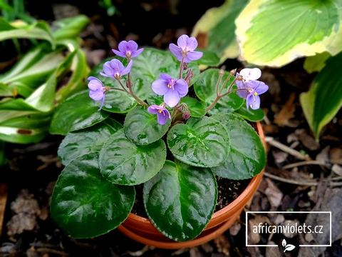
Streptocarpus brevipilosis
A simple light purple pansy with a darker eye. 4-8 flowers grow on one stem. The leaves are light green with a pale reverse and pliable petioles, thin, round, densely covered with short erect hairs, velvety. The species forms a terrestrial, disordered rosette.
Growing notes
The clone was found in the Nguru Mountains on open rock outcrops at an altitude of around 1000 m. It thrives in a warm and bright location, it can handle a little sun on the windowsill. It grows somewhat disorderly, the leaves sometimes curl.
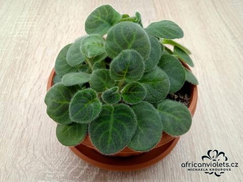
Streptocarpus goetzeanus
Single white with bluish or purple edges on upper petals, 1-2 per peduncle, rarely 5, requires colder temperatures to flower. Leaves oval to nearly round, purple beneath, edges nearly smooth, upper surface densely hairy. Miniature trailer to semiminiature trailer, frequently forms dense ball of foliage. Leaves from Kenji Hirose in Japan
Growing notes
The species comes from the Uluguru Mountains, where it grew on moss-covered rocks in the shade of rainforests at altitudes between 1300 and 2100 meters. The species is one of the most demanding, it is difficult to blossom in domestic conditions. Prefers cooler habitats, temperatures above 26 ° C can kill. To bloom, it requires alternating warmer day and lower night temperatures (to below 6 ° C). Requires excellent drainage at the roots.
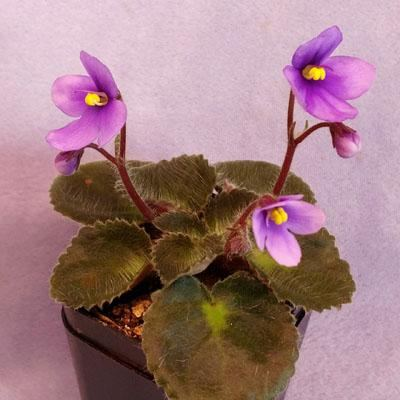
Streptocarpus ionanthus ssp diplotrichus '#3083'
Single mauve to deep purple blooms. Dark, round, serrated leaves with red backing. Small grower. Most likely also an 'Uppsala' as the numbering sequence matches.
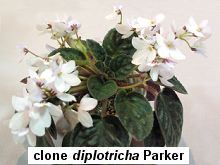
Streptocarpus ionanthus ssp diplotrichus 'Parker'
Description pending.
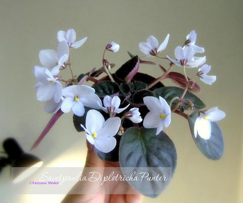
Streptocarpus ionanthus ssp diplotrichus 'Punter No 0'
A simple light purple pansy. The leaves are dark green with a red reverse, round, with distinctly jagged edges and a double type of leaf hair. The leaves tend to be spoon-shaped. The clone forms a smaller low lying rosette.
Growing notes
The clone does not like strong lighting, always place it on the edge of the shelf out of direct sunlight or LED strips. Otherwise, it will curl the leaves and thicken the center. Like other clones from the diplotrichus series, it will welcome a warmer place. It grows rather slowly.
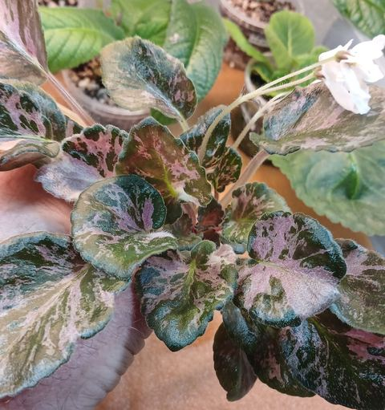
Streptocarpus ionanthus ssp diplotrichus 'Variegata Pink'
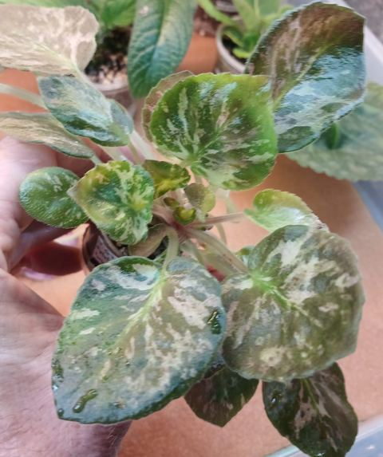
Streptocarpus ionanthus ssp diplotrichus 'Variegata White'
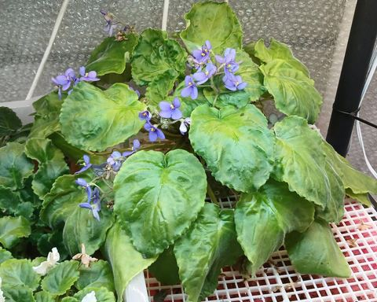
Streptocarpus ionanthus ssp grandifolius 'No 237'
A simple light blue pansy with a darker center. 6-12 flowers grow on one stem. Often, 2 stems are formed in the leaf axil. The leaves are medium green, oval, with a pale reverse, slightly toothed edges and short erect hairs. The clone forms a large single crown rosette.
Growing notes
The clone has no special environmental requirements, but prefers a warmer habitat. Due to the rich set of flowers, it will welcome occasional fertilization.
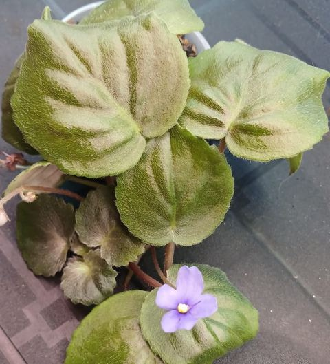
Streptocarpus ionanthus ssp grotei
Single pale mauve to deep blue-purple, 1-4 per peduncle, rarely 6. Leaves broadly oval to elliptic, medium green above, pale green or tinged with purple beneath, edges coarsely wavy or toothed, upper surface with appressed hairs of variable length. Rosette to trailing.
Growing notes
From Meise Botanical Gardens in Brussels, Belgium
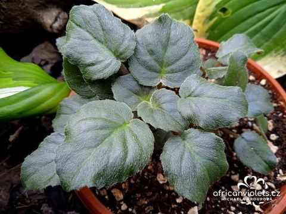
Streptocarpus ionanthus ssp grotei 'Mather no. 21'
A simple medium blue pansy. 2-5 flowers grow on one stem, which are hidden under the leaves. The leaves are olive to dark green with a reddish reverse, oval heart-shaped, with distinctly jagged edges. Grows like a semi-miniature trailer. A rare and not widely distributed collection plant.
Growing notes
The clone is quite demanding to grow. It thrives best in a thin layer of substrate inserted into a drilled hole in porous rock (tuff) while growing in a greenhouse. It requires high air humidity or frequent dew en temperature by 20°C. The plant can of course be grown in the standard way in a pot, but growth is very slow.
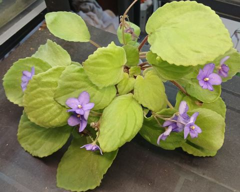
Streptocarpus ionanthus ssp grotei var Amani
Single pale mauve to deep blue-purple, 1-4 per peduncle, rarely 6. Leaves broadly oval to elliptic, medium green foliage, edges coarsely wavy or toothed, upper surface with appressed hairs of variable length. Rosette to trailing.
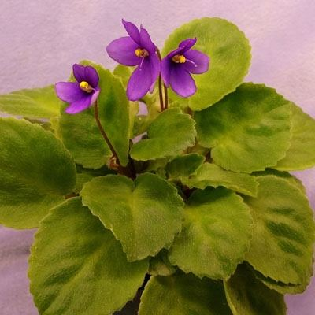
Streptocarpus ionanthus ssp grotei var confusa
Single purple flowers and medium green, lightly serrated and quilted foliage with short, soft, hairs giving velvety feel and darker petioles.
Growing notes
Best when grown single crowned, but may be grown multicrowned.
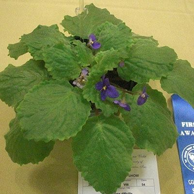
Streptocarpus ionanthus ssp grotei var difficilis
A simple medium sized dark blue pansy. 5-7 flowers grow on one stem. The leaves are medium green, longer rather than wider, small, pointed, with prominent veins and serrated edges.
Growing notes
The plant forms a low lying rosette with lateral crowns.
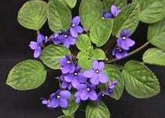
Streptocarpus ionanthus ssp grotei var difficilis 'Mather No. 2'
A simple medium sized dark blue pansy. 5-7 flowers grow on one stem. The leaves are medium green, longer rather than wider, small, pointed, with prominent veins and serrated edges. The plant forms a low lying rosette with lateral crowns.
Growing notes
The clone comes from the eastern part of the Usambara Mountains, where it grows along the banks of the Sigi River on the surface of igneous rocks in a thin layer of leaf humus. It requires a reasonably warm and moist site with good drainage at the roots. The plant seems fragile and sensitive, but if not exposed to extremes, this is an undemanding clone.
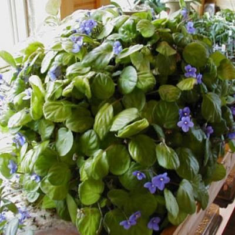
Streptocarpus ionanthus ssp magungensis
Single small dark violet-blue/darker eye, 2-4 per peduncle, very floriferous. Round, cupped-down, pebbled, slightly serrated, brown petiole/green-white back, prominent midrib. Semi-miniature trailer
Growing notes
Like most creeping species, it welcomes higher humidity. The clone fits perfectly into hanging containers, richly branched stems fall over the edges of the flowerpot. It prefers warmer habitats, which is not a problem to ensure when hanging a flowerpot under the ceiling.
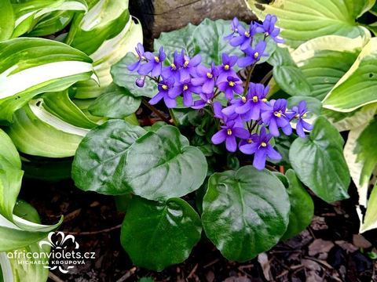
Streptocarpus ionanthus ssp orbicularis var purpurea
A simple tiny dark purple pansy. The leaves are medium green, round to heart-shaped, thin, shiny, small, with adjacent hairs. It grows upright as a small standard, it can form several lateral crowns.
Growing notes
Like orbicularis, it requires even substrate moisture and good drainage. It is adapted to high day and low night temperatures, but the bud set is not affected by the alternation of temperatures. Blooms very profusely.
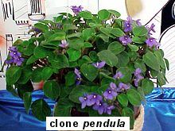
Streptocarpus ionanthus ssp pedulus
Single deep blue-violet, 1-2 per peduncle, rarely 4. Leaves oval to elliptical with obvious pointed tip, medium green above, pale green beneath, edges slightly wavy to coarsely toothed, upper surface with short erect hairs. Semiminiature trailer to standard trailer, rarely rosette.
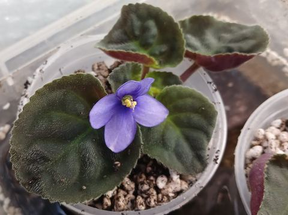
Streptocarpus ionanthus ssp pedulus
Single deep blue-violet, 1-2 per peduncle, rarely 4. Leaves oval to elliptical with obvious pointed tip, medium green above, tinged red-purple beneath, edges slightly wavy to coarsely toothed, upper surface with short erect hairs. Semiminiature trailer to standard trailer, rarely rosette.
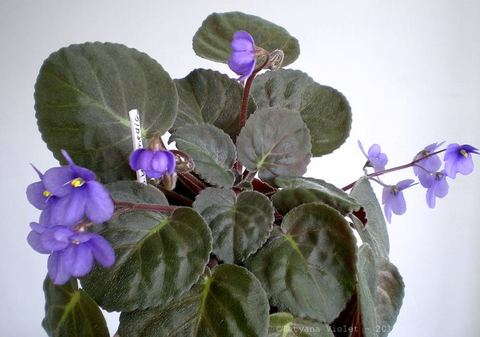
Streptocarpus ionanthus ssp pedulus var intermedia
Description pending.
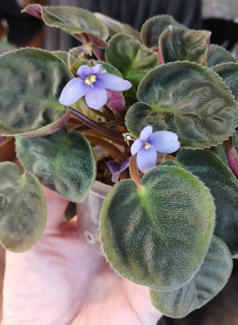
Streptocarpus ionanthus ssp pedulus var intermedia
Description pending.
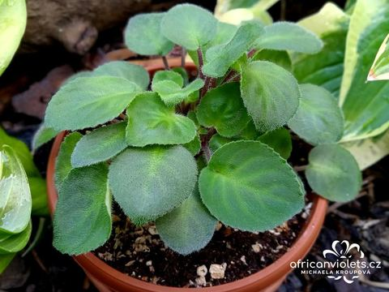
Streptocarpus ionanthus ssp pendulus var kizarae
Simple lavender pansy. 2-4 flowers grow on one stem. The leaves are medium green with brown petioles, longer rather than wider, hairy and with serrated edges. Grows like an upright compact trailer.
Growing notes
The clone was found in the eastern part of the Usambara Mountains near the settlement of Kizara. As a luxuriantly growing trailer, it will welcome more generous watering and a more nutritious substrate. It needs a warm habitat.
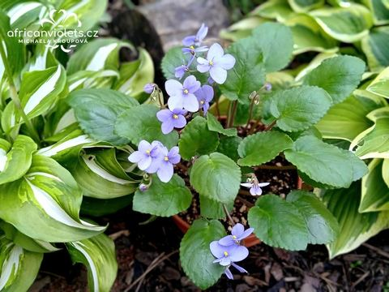
Streptocarpus ionanthus ssp rupicolus
Simple light to medium blue large pansy. 4-6 flowers grow on one stem. The leaves are medium to light green with a light green reverse, elongated, heart-shaped, shiny, with tooth-shaped edges that smooth out when mature. The clone forms a low lying rosette with lateral crowns.
Growing notes
The plant comes from lowland areas around Mombasa, Kenya, where it grows in crevices of exposed rocks. The clone is absolutely undemanding, tolerates higher temperatures, does not suffer from diseases. Compared to the Robertson and Cha Simba clones, it is slightly smaller, has lighter flowers and more distinctly serrated edges.
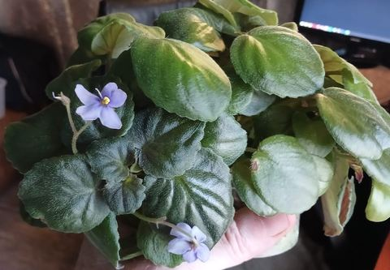
Streptocarpus ionanthus ssp rupicolus
Looks like a grotei to me.
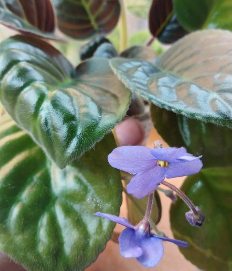
Streptocarpus ionanthus ssp rupicolus var Robertson
Growing notes
From the Ann Robertson Collection, Malindi Kenya in 2017. Prof Bellstadt -> Heather
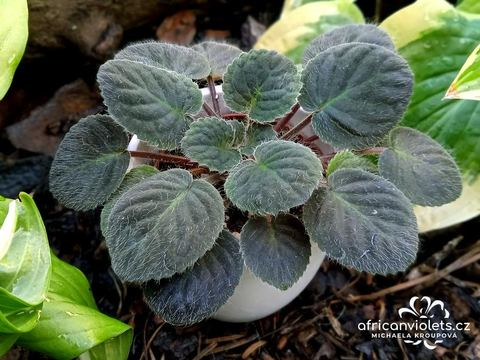
Streptocarpus ionanthus ssp velutinus
A simple medium purple pansy with a variable white border. 6-12 flowers grow on one stem. The leaves are dark green with a deep red reverse and green veins, heart-shaped, with long hairs and serrated edges. The blades of older leaves bend down. It forms a low lying semi-miniature rosette.
Growing notes
The clone comes from the western part of the Usambara Mountains, near Balangai, where it grew at an altitude of 900 m. It is very sensitive to overflow, the basis of success is an extremely light substrate and excellent drainage. They will appreciate a cooler habitat and lower light intensity.
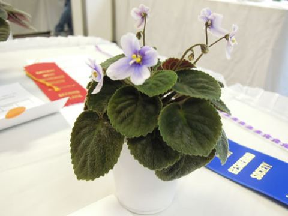
Streptocarpus ionanthus ssp velutinus lite
A simple white pansy with a purple gaping eye. 6-12 flowers grow on one stem. The leaves are dark green with a deep red reverse and green veins, heart-shaped, with long hairs and serrated edges. The blades of older leaves bend down. It forms a single crown miniature rosette.
Growing notes
This is a sport of the original velutinus clone , found in a private collection. The plant is slightly smaller, but has the same requirements as the original.
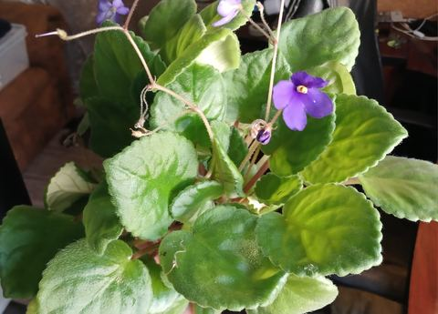
Streptocarpus ionanthus ssp. ionanthus var. ionanthus 'Mather A'
Growing notes
via Prof. Dirk Bellstedt, Ann Roberston - Malindi, Kenya, ex Sigi Falls Sylvia Mather collection. Originally from the Kenya National Museum, cutting from 1996.
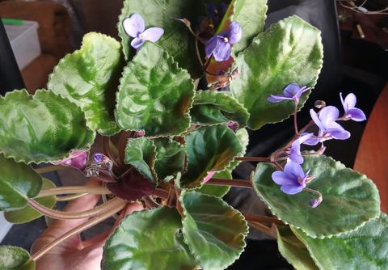
Streptocarpus ionanthus ssp. ionanthus var. ionanthus 'Mather B'
Growing notes
via Prof. Dirk Bellstedt, Ann Roberston - Malindi, Kenya, ex Sigi Falls Sylvia Mather collection. Originally from the Kenya National Museum, cutting from 1996.
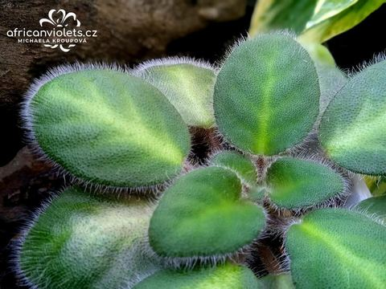
Streptocarpus ionanthus subsp. ionanthus var. ionanthus cl. Sigi Falls
Simple medium blue pansy. 2-4 flowers grow on one stvol. The leaves are dark green, thick, elongated, pointed, markedly hairy, with a red reverse and yellow vein. The clone forms a ground rose with more crowns.
Growing notes
The clone was found on the slopes of the Sigi River waterfall in the coastal areas of the Tanga region. It requires a warm and humid habitat, otherwise it is absolutely unpretentious, durable. It is better to let it grow freely with more crowns that cover the asymmetry of the main rose. On long summer days, the veins are highlighted.
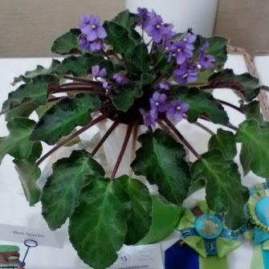
Streptocarpus ionanthus subsp. ionanthus var. ionanthus cl. tongwensis
Large, upright, usually single-crowned species with light blue single flowers and pointed, dark, leaves.
Growing notes
The clone comes from around Tongwe Mountain in the northeastern part of the Usambara Mountains. It grows there in a weak layer of humus on the roll rocks at an altitude of 700 m. Prefers warm habitats, tolerates temperatures above 30 ° C. An undemanding and richly flowering plant.
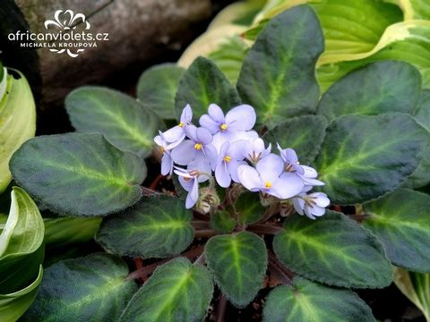
Streptocarpus ionanthus subsp. ionanthus var. ionanthus cl. tongwensis 'Uppsala 3397'
Simple light blue pansy. 4-5 flowers grow on one crown. The leaves are medium to dark green with green or yellow vein, more elongated than the basic clone (longifolia) and with smoother edges. The reverse side of the leaves is reddish. The clone forms a medium-sized rosette.
Growing notes
The clone comes from around Tongwe Mountain in the northeastern part of the Usambara Mountains. On long summer days, the veins of the leaves are beautifully accentuated. It prefers a warm habitat, the clone seems a bit more delicate than the original, yet it is one of the less demanding species.
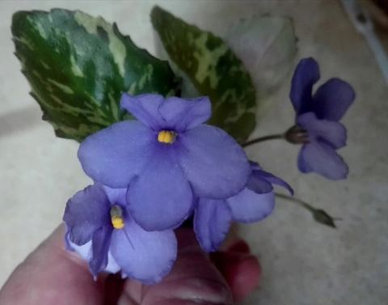
Streptocarpus ionanthus subsp. ionanthus var. ionanthus cl. tongwensis 'White Tiger'
Large variegated clone of tongwensis.
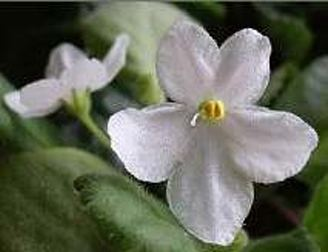
Streptocarpus ionanthus subsp. ionanthus var. white ionanthus
Simple white pansy. 4-12 flowers grow on one stem. The leaves are medium green with a light green reverse, oval, with slightly serrated edges and short erect hairs. The clone forms a single crown rosette of standard size. A very rare collection plant.. Not an easy grower.
Growing notes
This is a very demanding clone. It requires a warm and humid place, diffused light. It grows rather reluctantly in normal home conditions, the leaves sometimes give a sickly impression.
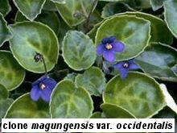
Streptocarpus ionanthus subsp. occidentalis cl. magungensis var. occidentalis
Simple blue-violet pansy. 2-4 flowers grow on one stvol. The leaves are dark green with a red reverse, waxy, ovate, with knurled wavy edges and sparse hair. It is a compact creeping clone with strong and not very flexible stems.
Growing notes
The clone comes from the Bagai Forest Reserve in the Tanga region, where it grew in gorges along streams in a weak layer of land. The plant is very unpretentious, attractive with its shiny leaves, it benefits from a moist substrate. However, it needs low night temperatures up to 10 ° C for flowering, so it hardly blooms in ordinary households.
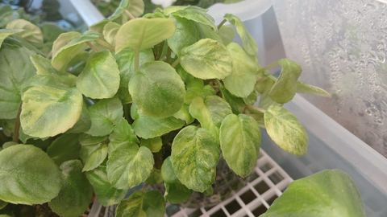
Streptocarpus ionanthus subsp. occidentalis cl. magungensis var. occidentalis 'Variegated'
Simple blue-violet pansy. 2-4 flowers grow on one stvol. The leaves are dark green with a light green variegation, with a red reverse, waxy, ovate, with knurled wavy edges and sparse hair. It is a compact creeping clone with strong and not very flexible stems.
Growing notes
The clone comes from the Bagai Forest Reserve in the Tanga region, where it grew in gorges along streams in a weak layer of land. The plant is very unpretentious, attractive with its shiny leaves, it benefits from a moist substrate. However, it needs low night temperatures up to 10 ° C for flowering, so it hardly blooms in ordinary households.
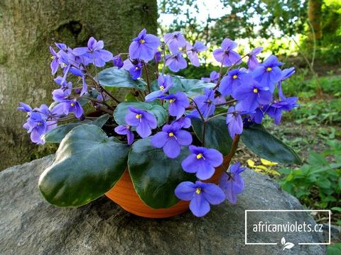
Streptocarpus nitidus
Simple dark purple pansy. 5-7 flowers grow on one stem. The leaves are medium green with a reddish reverse, round, shiny, waxy, almost hairless. The species forms a ground rosette or a compact bushy trailer.
Growing notes
The species comes from the Nguru Mountains, where it grew on a rock along a forest stream at an altitude of about 1000 m. It prefers cooler temperatures between 16-20°C, high humidity, a habitat protected from the sun and good drainage. The plant is moody, but suitable for beginners.

Streptocarpus shumensis
Single pale lilac to nearly white with darker purple spot towards base of the upper petals, 1-4 per peduncle, rarely 6. Leaves nearly round, white to pale green beneath, edges toothed, upper surface shiny with sparse long hairs on raised bumps. Miniature to semiminiature rosette, but may form multiple crowns.
Growing notes
It comes from the dry forests of the Nguru and Usambara mountains, where it grows at altitudes between 1400-1950 m. It can withstand colder temperatures, weaker lighting, but is sensitive to wet at the roots. Otherwise it is relatively unpretentious, it blooms willingly, often it produces fruit spontaneously.
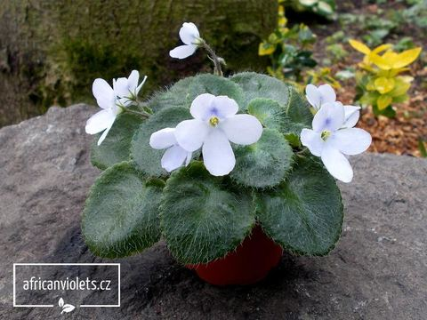
Streptocarpus shumensis var Mather EE
Single pale lilac to nearly white with darker purple spot towards base of the upper petals, 1-4 per peduncle, rarely 6. Leaves nearly round, white to pale green beneath, edges toothed, upper surface shiny with sparse long hairs on raised bumps. Miniature to semiminiature rosette, but may form multiple crowns.
Growing notes
It comes from the dry forests of the Nguru and Usambara mountains, where it grows at altitudes between 1400-1950 m. It can withstand colder temperatures, weaker lighting, but is sensitive to wet at the roots. Otherwise it is relatively unpretentious, it blooms willingly, often it produces fruit spontaneously.
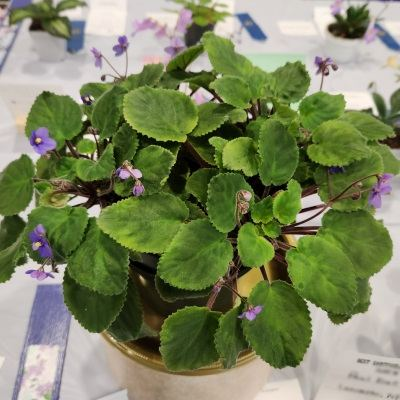
Streptocarpus teitensis
Single purple, 3-4 per peduncle, hairs on back of petals. Leaves variable, but usually longer than wide, dark green and shiny above, pale green to purple beneath, edges shallowly toothed, petiole attaches to blade from underneath rather than on end in mature leaves, upper surface with dense hairs. Standard rosette.
Growing notes
It is endemic to 1 square kilometer on Mbololo Hill in the Taita Hills of southern Kenya. teitensis grows nicely on sheer rock faces, rooting into moist moss and crevices.Compact grower.
Your order
To order by WhatsApp (username @ggoode.sa) or Facebook Messenger, copy the order text and paste it into your message. Prices exclude postage.